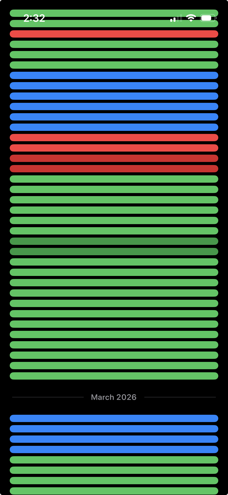
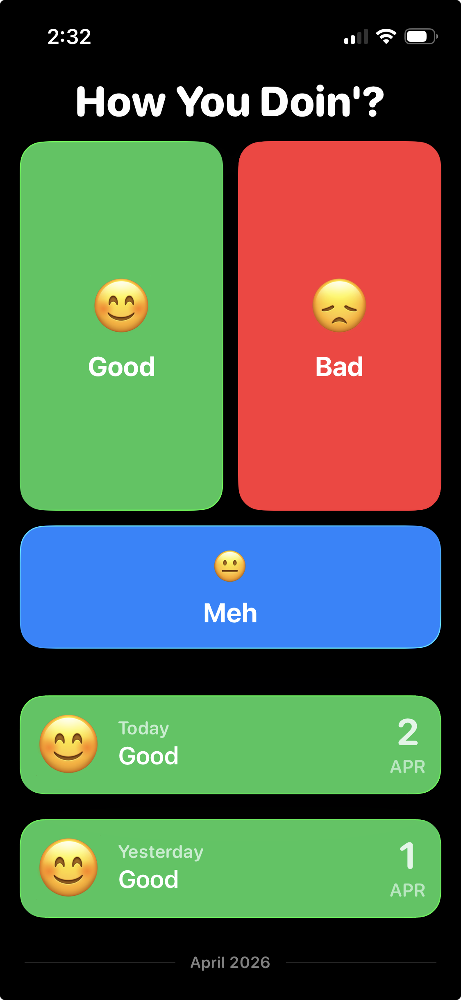
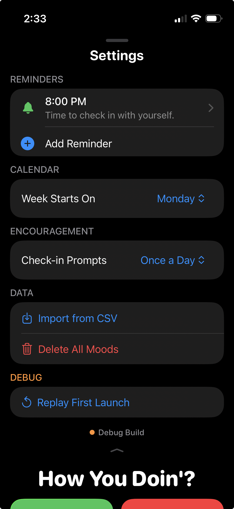
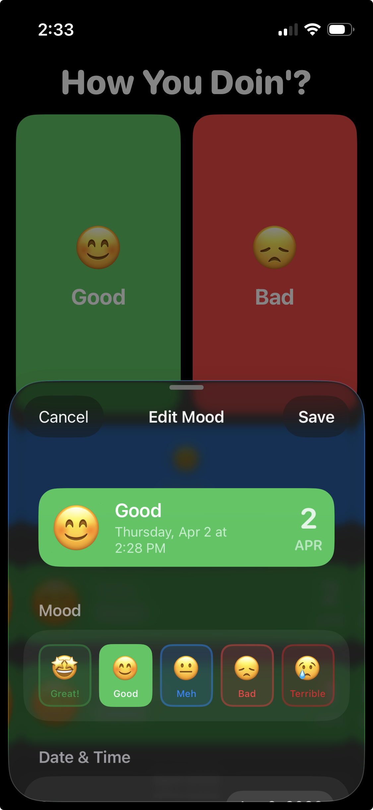

How You Doin'?
A mood tracking app with everything you want and nothing you don't
Vibe-coded
The mood tracking app space is full of complicated apps stuffed with features I'll never use. I wanted a simple, native app that would let me enter my mood easily, quickly, and without any friction. I wanted an app where someone could enter and view moods without ever realizing other features existed, yet have those features intuitively available if desired.
The design stems from my desire to minimize the friction required to start a mood tracking practice. The three large mood entry buttons dominate the home area because 99% of the time when I launch my mood tracking app it's to enter my mood. A reverse-chronological list of previously entered moods descends from these buttons. Above the mood buttons lies a Settings menu accessed with a swipe. Tapping a mood presents options to edit the entry, while swiping left on a mood allows for deletion.
Colors and typography are intentionally bold and bright to reinforce the simplicity of concept while feeling at home on iOS 26. Liquid Glass design principles are reflected throughout, from the softly curved button and card corners to a beautiful floating mood editing sheet.



